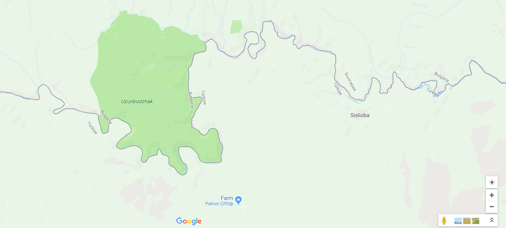
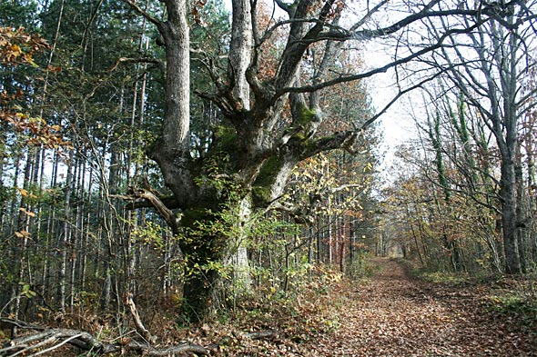
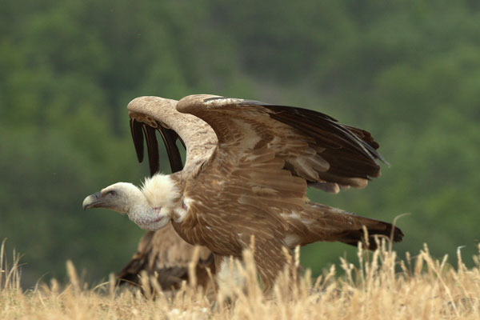

Узунбуджак
„Узунбуджак“ е биосферен парк по програмата „Човек и биосфера“ на ЮНЕСКО, разположен в Югоизточна България.
Обхваща обявените според националното законодателство резервати Узунбуджак, Витаново и Средока и цялата територия на община Малко Търново.
Местоположение

Резерватът е разположен между селата Кости (община Царево) и Сливарово (община Малко Търново) и се намира в долината на Резовска река, наблизо 20 километра от устието на реката. Релефът е разчленен, като надморската височина варира между 50 и 300 м.
Климатът е континентално-средиземноморски и е по-мек, поради близостта си до бреговете на Черно море. През цялата година средните месечни температури не падат под 0 °C (през януари са 2 – 3 градуса по Целзий). Почвите са канелени и жълтоземни.
През Узунбуджак преминават река Резовска, река Каретарски дол и Лопушница, която се влива в първата.
История
Резерватът е обявен за защитена територия на 13.12.1956 година,
а през март 1977 година е включен в списъка на биосферните резервати по
програмата „Човек и биосфера“ на ЮНЕСКО. с обща площ от 2529,6 хектара.на.
Флора

Установени са 651 вида и подвида висши растения. 65% от горите са дъбови, а 30% са букови.
Реликти – странджански дъб (Quercus hartwissiana), лавровишня (Laurocerasus officinalis), странджанска зеленика (Rhododendron ponticum), понтийско бясно дърво (Dapne pontica), колхидски джел (Ilex colhica), чашковидна звъника (Hypericum calycinum), странджанска боровинка (Vaccinum arctostaphylos), кавказка иглика (Pyrus eleagrifolia), дива мушмула (Mespilus germanica), понтийска ведрица (Fritillaria pontica) и други.
Фауна

Животинският свят в резервата е много разнообразен. Срещат се 41 вида бозайници, 11 вида влечуги, 10 вида земноводни и 24 вида риби – видра, европейска дива котка, степна скачаща мишка, воден плъх, смок мишкар, голям стрелец, шипобедрена костенурка, сирийска чесновица (Pelobates Syriacus), жаба дървесница, червенокоремна бумка, щука, каракуда, червеноперка, езерен рак и др.
Резерватът е известен най-вече с птиците, които могат да се наблюдават на неговата територия. 221 вида птици гнездят в резерват Сребърна: къдроглав пеликан, розов пеликан, малък корморан, блестящ ибис, лопатар, ням лебед, белоока потапница, малка белочела гъска, червеногуша гъска, сива гъска, патици, тръстиков блатар, синьогушка, мустакат синигер. Тук е единственото традиционно в България гнездово находище на голяма бяла чапла.